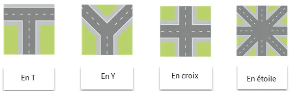

LES INTERSCTIONS (sans panneau-partie1)

Sur la route se trouvent de nombreuses intersections,
Qu'est ce qu'une intersection? comment la reconaitre et l'aborder?
est définie par le code de la route comme un lieu de jonction ou de croisement à niveau
de deux ou plusieurs
chaussées.
Les carrefours en X, Y, T ou encore en étoile sont les plus courants:

L’environnement de conduite est rempli d’indices permettant de reconnaître une intersection
avant de l’aborder :
Les intersections sont par nature des zones potentiellement dangereuses et il convient d'anticiper l'approche de ces zones en essayant de recueillir le plus d'informations, pour conduire en toute sécurité vous devez :
Significations des couleurs:
Un feu vert autorise à passer, avec prudence. Mais je dois être prêt à m'arrêter :
Arrêt obligatoire. Lorsque le feu repasse au vert, je ne me précipite pas pour redémarrer.
Autorisation de passage d'effet du signal malgré le feu rouge à condition :
Il peut remplacer le feu vert pour attirer l'attention du conducteur sur un danger particulier. Le conducteur peut franchir la ligne d'effet du signal mais avec une prudence renforcée.
En l'absence de panneau sur le support même du feu, je passe en respectant la priorité à droite. (à abordé dans la leçon suivante)
Bon courage pour votre code !